UX9S Ironless Linear Motor Simulation + Rev Engineering
Updated 07-20-2025
Tecnotion UX9S Coil Teardown
A scrap Tecnotion UX9S coil was purchased used (ebay)
2 Sizes of magnet track are available---UXX and UXA. Details of the magnet tracks can be evaluated from the CAD models on the internet. The magnet grade is unknown and will need to be determined with simulation results. Something interesting is the UXX has a 20 micron larger air gap.
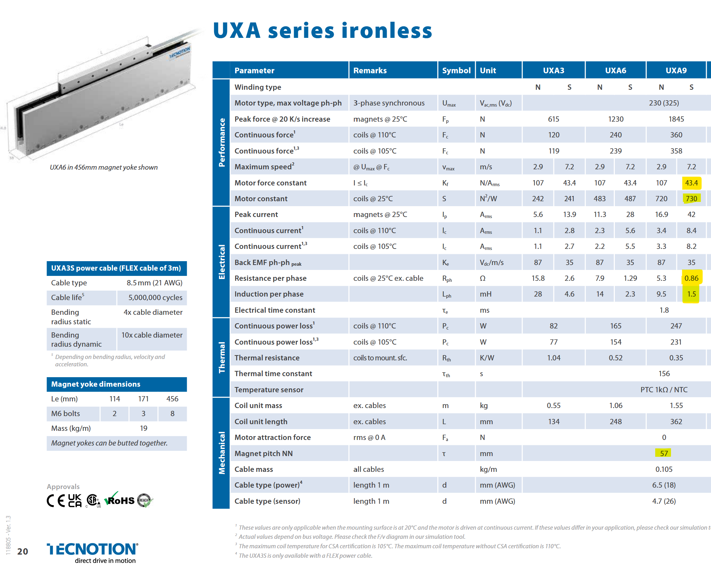 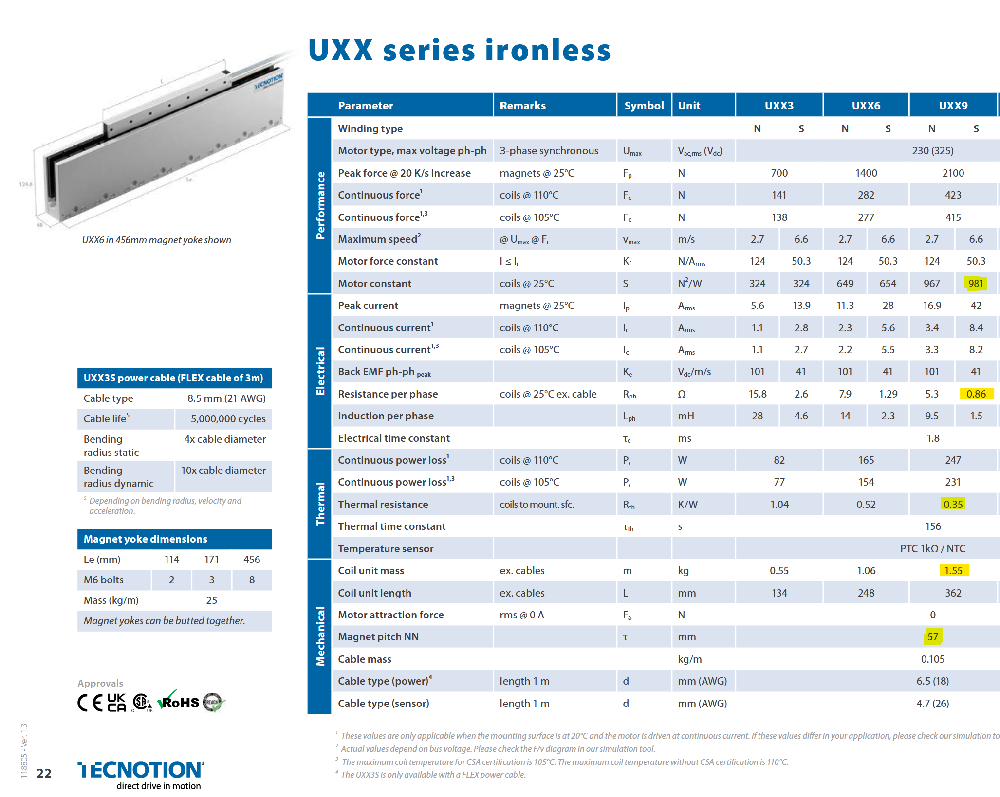 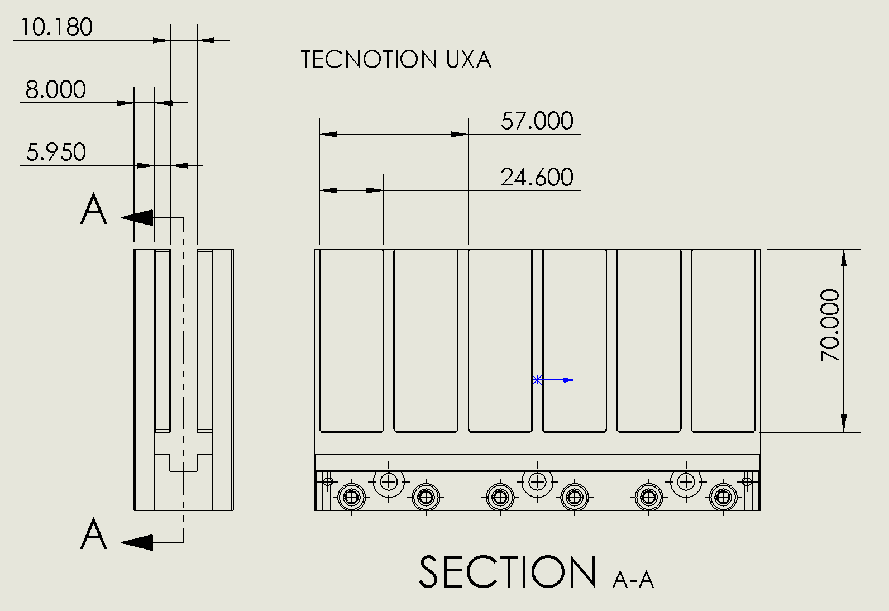 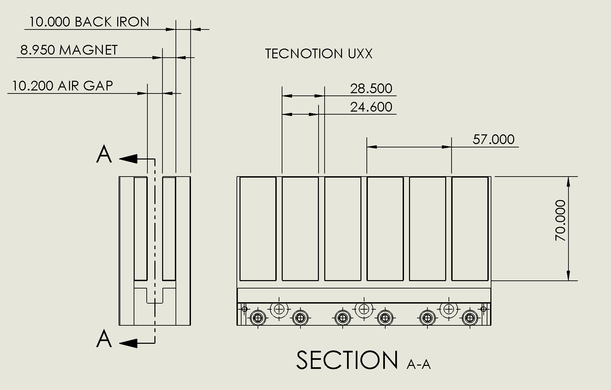The coil is sectioned and the dimensions are estimated, then modeled in CAD.
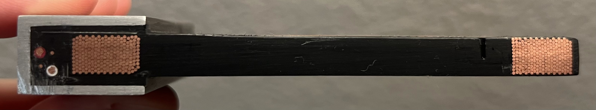 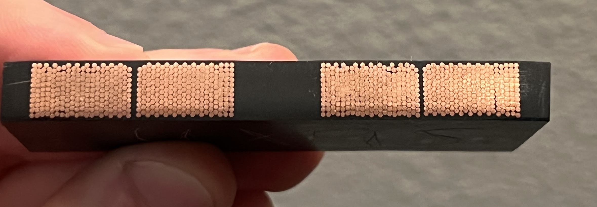 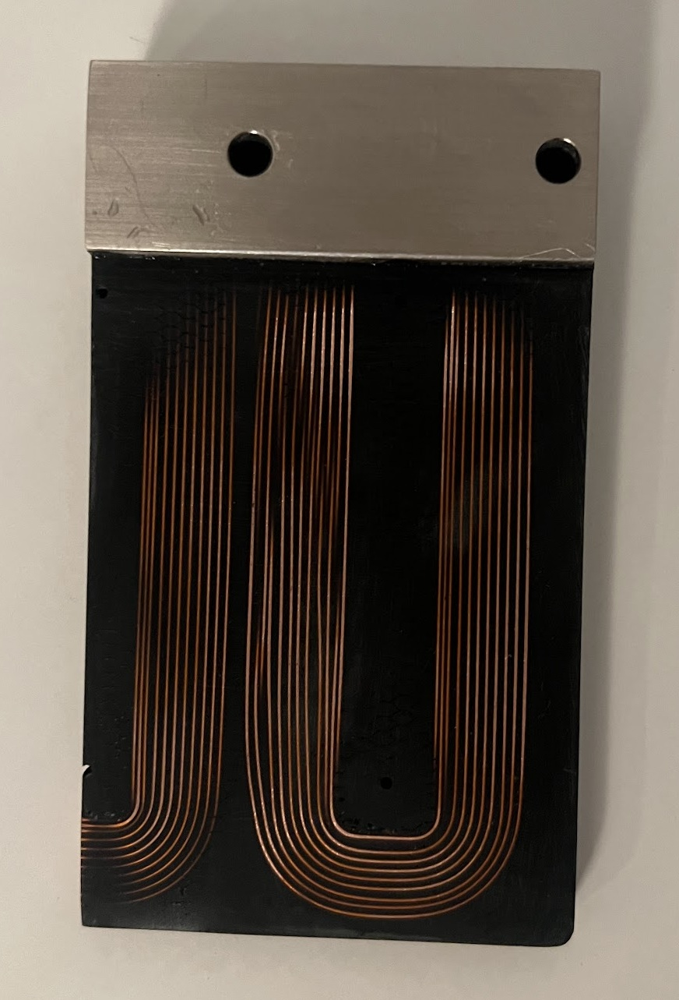
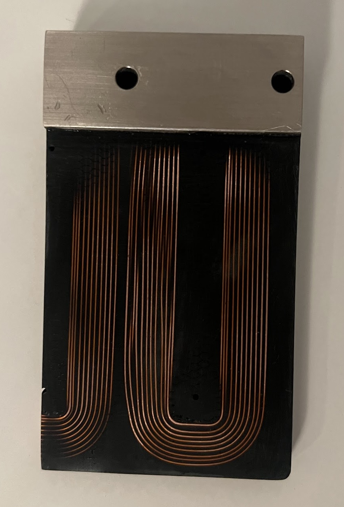
An iPhone picture is used to count turns with open source image processing code (ImageJ). There are 220 turns per coil. The picture can also be used to estimate the wire diameter knowing ~572pixel = 15mm. The estimated average diameter is ~0.62mm
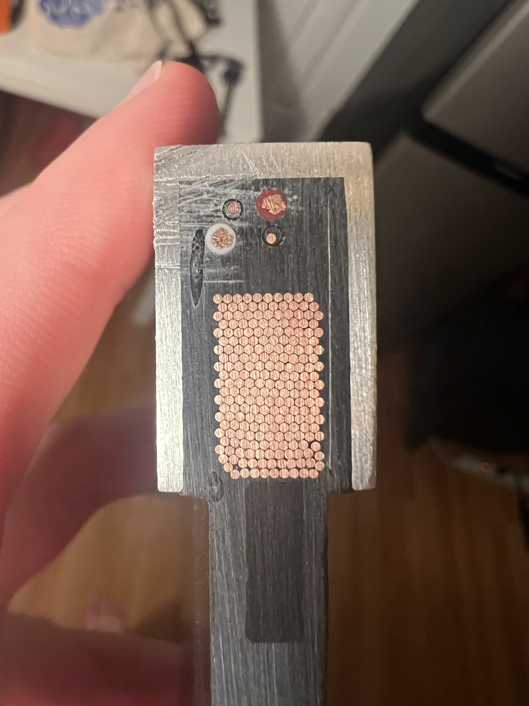 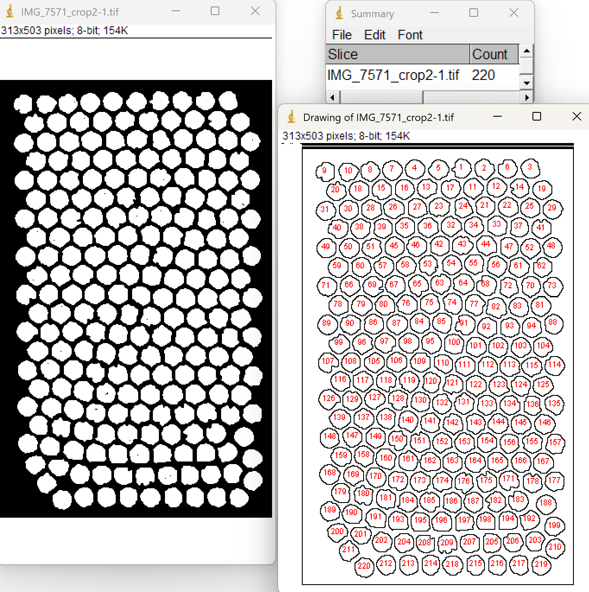Based on the coil dimensions, the phase resistance of each coil at 25C is estimated as 2.5942Ω considering 60um (0.00236") insulation build and 0.64mm (0.0252") conductor diameter---similar to AWG22 bondable magnet wire . Therefore for the configuration of UX9S (3x coils per phase) the coils are connected in parallel. The phase resistance estimate is 0.8647Ω near datasheet value of 0.86Ω.
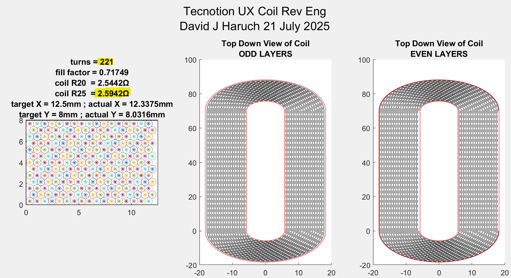 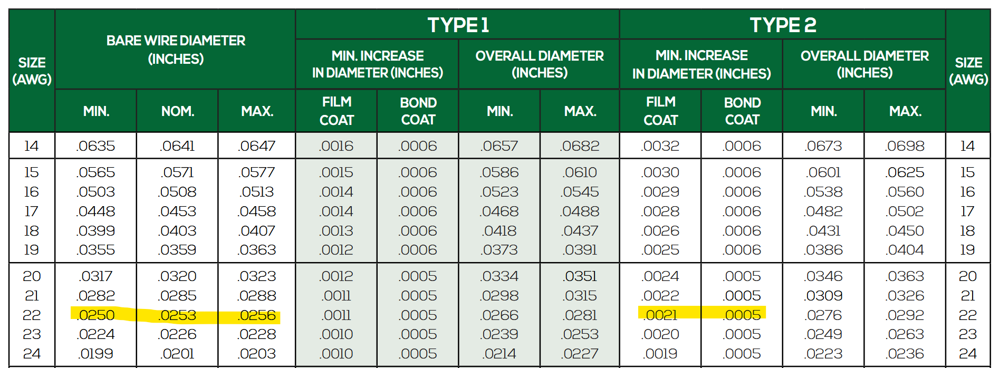2D FEM Calculation
A 2D finite element model of the motor is created in FEMM. A depth of 70mm is assumed (same depth as magnets). A synchronous current (ipk) of 1A is passed through the windings (, , ). In a "RMS of phase" current description, this is a current of 0.7071A. The coil position is varied to determine the location of peak force. At the location of peak force, the coil field is 90deg offset from the magnet-track field. For purposes of computing the motor constant, the copper loss of a 3 phase wye coil set can be computed as P = Rph*(3/2)*i_pk^2.
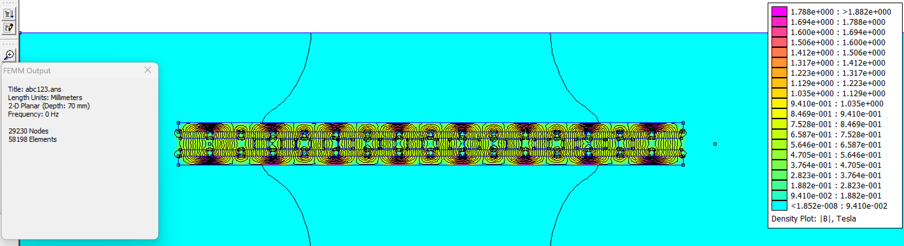 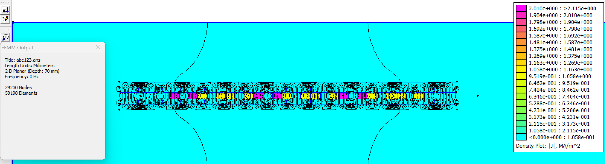The finite element model post processed data is compared to vendor datasheet. N42 grade magnets agree well (also agrees with my UL12 motor simulation).
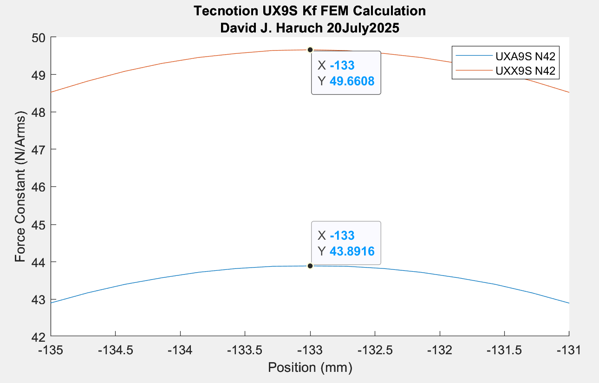| Parameter | UXA Datasheet | FEM Calculation (N42) | % Error | Unit |
|---|---|---|---|---|
| Force Constant | 43.4 | 43.82 | +1.1% | N/Arms |
| Parameter | UXX Datasheet | FEM Calculation (N42) | % Error | Unit |
| Force Constant | 50.3 | 49.66 | -1.3% | N/Arms |
Summary
A commercial ironless linear motor is reverse engineered and the datasheet performance is compared with simulation. Good agreement is seen with 2D FEM calculation. Analysis showed a magnet grade of N42 is most likely for the off-the-shelf magnet tracks.